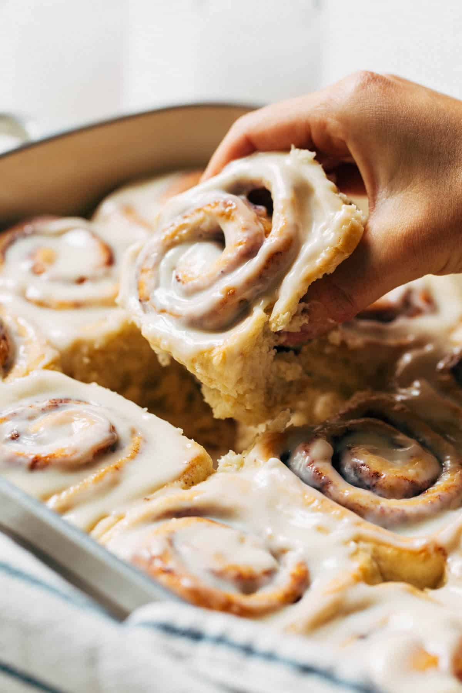

BEST Homemade Cinnamon Rolls
Homemade cinnamon rolls have always been a cherished tradition in my family. No major holiday feels complete without a fresh batch baking in the oven, filling the house with their warm, comforting aroma. Inspired by those special memories, I wanted to create a cinnamon roll recipe that is both easy to make and worthy of any celebration.
Ingredients
Dough
- 4 ½ - 5 cups all purpose flour
- 6 tbsp butter
- 2 packets active dry yeast
- ⅓ cups pure granulated cane sugar
- 1 tsp salt
- 1 large egg
- 1 ½ cups water
Filling
- ¼ cup butter room temperature
- 1 tbsp cinnamon
- ½ cup brown sugar
Icing
- 4oz cream cheese
- ¼ cup butter, room temperature
- 1 cup powdered sugar
- 2 tsp vanilla extract
Instructions
Cinnamon Roll Dough
- In a large mixing bowl, whisk together 2 cups flour, sugar, yeast, and salt.
- In a heat-safe bowl, combine the water and butter (cut into tablespoons). Heat in the microwave for 30 sec – 45 sec, until warm to the touch but not hot. The butter will not melt completely.
- Pour into the dry ingredients with the egg and mix with a wooden spoon.
- Add in 2 more cups of flour and mix. It should turn pretty thick and sticky at this point.
- Add in ½ cup of flour and mix again. It should now turn shaggy and become difficult to stir. Once it reaches that point, set the spoon to the side and use your hands to mix and knead the dough.
- It will be sticky, so add another ¼ cup of flour and continue to mix and knead by hand. It should turn into a smooth mass that’s soft and tacky.
- With a clean finger, press it into the dough. If your finger is sticking, add another ¼ cup of flour and knead. If it’s not, then shape it into a ball and let it rest uncovered for 10 minutes.
- When the 10 minutes is up, the dough should have puffed up quite a bit but not quite doubled in size.
- Place the dough on a lightly floured surface and pat it into a rough rectangle shape. Roll it into a 10×15 inch rectangle using a rolling pin.
- Spread the room temperature butter into a thin and even layer, leaving about ½ inch border all around the outside of the dough.
- Sprinkle with the brown sugar and spread it even with your hand. Then top it with the cinnamon.
- Working from the 15 inch end of the dough, roll it up into a log. Place your hands at each end of the log and give it a gentle squeeze in to compact the log of dough. It may have stretched out a bit during the rolling process so this brings it back together.
- For best results, use unflavored dental floss to cut the rolls. If you don’t have floss, you could also use really thin sewing thread. If using a sharp knife, gently saw back and forth and try not to press straight down into the rolls. This will squish them into an odd shape.
- Using the floss, slide it under the roll and toss both ends of the floss over top. Pull them through to create a cut. Cut off the two ends of the log and then cut the remainder into 12 pieces.
- Cut the entire log in half, then cut those two halves in half to create 4 segments. Cut each of those 4 segments into 3 rolls to get a total of 12.
- Place the rolls in a buttered or greased 9×13 dish (you could also use two 9″ round pans, placing 6 rolls in each). It’s OK if all of the rolls are touching.
- Place in a warm spot and cover with a towel to rise for 1 hour. If you live in a colder climate, preheat the oven to the lowest temperature. Once it’s ready, turn the oven off and place the rolls inside. This creates a warm environment for the rolls to proof.
- Preheat the oven to 350°F (first remove the rolls if you proofed them inside) and check on the rolls. They should have doubled in size and now take up the entire dish.
- Bake for 25-30 minutes or until the tops are a light golden brown. While they cool, make the icing.
Cream Cheese Icing
- Place the cream cheese and butter in a bowl and use a fork to mash the two together. Make sure they’re both softened to room temperature, otherwise the icing will be lumpy.
- Add the powdered sugar and vanilla and mash again with the fork. Once the mixture starts to loosen, switch to a whisk and mix until smooth.
- Spread onto the warm rolls and dig in!